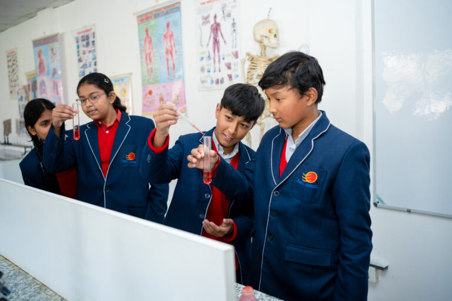

Welcome to Euro School, a balanced modern school dedicated to produce bright minds for future Nepal and the world.
In 2007, Euro Kids (Tangal) successfully introduced international standards for preschool education in Nepal, Its success led to the birth of Euro School on 19th April, 2008. The school was shifted to Hadigaun after two years as the number of students increased. In 2017, the school was shifted to New Colony, Hattigauda where better infrastructure is provided.
Euro School, one of the premium schools in Nepal, is the venture of Euro Kids (Tangal) and IEC group.
At Euro School, we strive to achieve a balance between academics and co-curricular activities, between theoretical and practical learning, between national curriculum and new generation teaching aids and more importantly shaping a child to be a responsible global citizen while retaining the rich Nepali ethos.
Our school is a learning center, a laboratory, where students develop ideas and understanding pursuit, passion and dreams and hold themselves and their classmates accountable for shared and individual work.
Message From MD
Ms. Shailaja Adhikary - MD/Principal
Euro School
At Euro School, all aspects of our educational processes are carefully designed to cultivate and stimulate the intellectual, social, and personal development of the most important stakeholders at this institution, the students Dur students learn the curriculum, through modern learning student centric pedagogical approaches which are imparted by a highly trained faculty.
As we are here to serve a global community, we assist internationally-mobile families in making a smooth transfer to any school system or graduate to universities world wide.
We are passionate about creating a ‘learning institution that is dynamic and constantly seeking excellence to meet the needs of the present as well as the future, while learning from the ethical and moral value systems of our rich national heritage.
Euro School is committed to the complete development of a student, this includes academic knowledge, social skills, intellectual curiosity, Physical endurance and a special emphasis on self-discovery. We have a diverse group of students and teachers who possess a global perspective We invest wisely in our human resources for the professional development of our staff and they in turn see themselves as part of the world-wide educational community.
We promote tolerance, mutual respect and international-mindedness. It is out commitment to mould children to be open to thinking globally and be prepared for life anywhere in the world. We believe that self-discipline is more sustainable than imposed discipline and hence there is no authoritarianism in our school in our scheme of things we promote high standards of achievement and provide space for our students to flourish The Nepali soul of the school goes well beyond festivals and food in that it permeates all that we do.
We believe in providing all our students with world class infrastructure and an environment that is conducive to learning comfortably and constantly work towards upgrading the school, in a manner beneficial for students.
As parents and teachers, it is our commitment to adopt ways and means to channelize the talents and energy of our students into creative community building With this noble sense of purpose, I request all staff, parents and well-wishers to join hands as we take Euro School to greater heights.
Our Mission and Vision
Our Mission
Differentiated, in-depth and cohesive learning programs which stimulate and develop each child's abilities to his or her highest potential.
Highly motivated and dedicated teachers who are result oriented through their commitment to ongoing professional development, quality teaching, coaching, mentoring and collaboration.
A learning environment that is responsive to students' voices. Enriching and engaging resources.
Opportunities for parents and guardians to take an active part in learning and decision making policies.
Our vision
Our vision is to be a premier global educational institution by providing a broader, bolder, holistic and more meaningful education. We strive to cultivate all round qualities in a student through excellence in education that shall foster academic understanding, brilliance, spiritual wellbeing, psychological strengths, resourcefulness and creative skills, social responsibility and concern for one's environment.
ECA/CCA
At Euro School, we pride ourselves on our innovative approach to education, which seamlessly integrates Extra-Curricular Activities (ECA) and Co-Curricular Activities (CCA) into the daily school timetable. This integration fosters a well-rounded learning experience that nurtures students academically, socially, culturally, and morally.
Our diverse range of activities, including athletics, cultural events, values education, personality development, character-building, science lab explorations, classroom initiatives, creative arts, and meditation, are thoughtfully woven into the curriculum. This holistic approach empowers students to explore their interests, develop new skills, and forge lasting friendships.
By participating in these activities, students at Euro School are encouraged to become confident, compassionate, and responsible individuals, equipped with the essential skills and values needed to thrive in the 21st century. Our commitment to a balanced education ensures that each student is prepared not only for academic success but also for a fulfilling and meaningful life.
Football/Futsal
Euro School offers exceptional facilities for Football and Futsal, with two courts designed to provide students with a professional and safe environment to hone their skills. These sports promote teamwork, strategy, and physical fitness, enabling students to build their confidence and competitive spirit.
Basketball
Our school boasts two top-quality basketball courts with the best mats, ensuring a safe and optimal playing experience. Basketball at Euro School focuses on developing students’ agility, coordination, and teamwork, fostering a love for the game while enhancing their athletic abilities.
Dance
Euro School’s dance program offers a diverse range of styles, including Hip-hop, Classical, and Contemporary dance. Students have the opportunity to explore their passion for movement, express creativity, and develop discipline through structured dance lessons, culminating in performances that showcase their talents.
Music
The music program at Euro School is designed to nurture students’ musical talents across a variety of instruments. We offer lessons in keyboard, violin, drums, vocals, and guitar, providing a comprehensive music education that develops both technical skills and a deep appreciation for music.
Drama & Theatre
Our Drama and Theatre program encourages students to explore the world of performing arts. Through acting, scriptwriting, and stagecraft, students enhance their creativity, communication skills, and self-expression, preparing them for potential careers in the arts or simply enriching their personal development.
Taekwondo
Taekwondo at Euro School instills discipline, respect, and self-defense skills in students. This martial art not only promotes physical fitness but also builds mental resilience and focus, helping students develop a strong sense of self-confidence and determination.
Badminton
With our badminton facilities, students at Euro School can develop their agility, reflexes, and strategic thinking. Badminton is a fast-paced sport that encourages physical fitness and sharpens students’ hand-eye coordination, making it a popular choice among our CCA offerings.
Skating
Our skating program offers students the thrill of learning and mastering skating techniques in a safe environment. Skating at Euro School helps students improve their balance, coordination, and confidence as they glide across the rink, enjoying the freedom of movement.
Physical Education (PE)
Physical Education at Euro School is a cornerstone of our CCA, focusing on overall physical health and well-being. Our PE program includes a variety of activities that promote fitness, teamwork, and a lifelong appreciation for an active lifestyle, ensuring that students develop strong, healthy bodies and minds.

Arts
The Arts program at Euro School encourages students to express their creativity through various mediums, including painting, drawing, and sculpture. Our comprehensive arts curriculum nurtures imagination, critical thinking, and artistic skills, helping students discover and develop their unique creative voices.
Library
In today’s fast-paced world, libraries play a pivotal role in nurturing young minds and fostering a lifelong love of learning. The Euro School library, a cornerstone of our educational institution, stands as a testament to this commitment. More than just a collection of books, it is a dynamic space that empowers students to explore, discover, and grow.